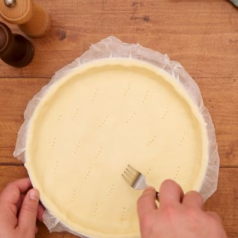

La Quiche Lorainne
Les Ingredients
- 1 pate brisee déja prete de 28 cm
- 100 g de lardons fumes
- 100 g de des de jambon
- 20 cl de creme liquide
- 1 cuillere a soupe de maizena
- 3 oeufs entier
- poivre
- sel et muscade moulue
- fromage rapé
Preparation
| Temps total |
40 min |
| Preparation |
10 min |
| Cuisson |
30 min |
- Etaler la pâte avec son papier sulfurisé dans un moule à tarte et la piquer à la fourchette.

- Casser les oeufs dans un saladier puis verser la crème et bien mélanger.
Ajouter la maïzena,
poivrer, saler et ajouter une pincée de muscade moulue puis mélanger.
- Répartir les lardons et les dés de jambon sur la pâte. Recouvrir avec la préparation
- Parsemer de fromage râpé selon le goût.
- Cuire environ 30 minutes à 220°C (pour un four à chaleur tournante)
- Servir avec une salade verte en entrée ou coupée en petits cubes pour l'apéro.
Retour au Menus